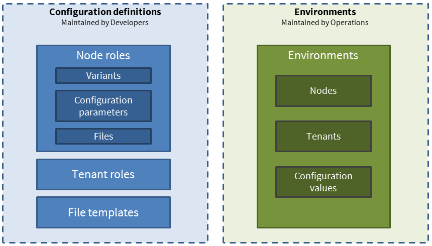

wcm.io DevOps
wcm.io DevOps
CONGA - General concepts
Targets System Configuration
The configuration generator focuses on system configuration that is usually defined at deployment time and is static at runtime. It is not targeted to “runtime configuration” like site configuration, tenant configuration that can be changed at any time by authorized users.
This tool is not a deployment automation tool. It focuses only on configuration generation and can be integrated in a manual or automated deployment process.
Supported Systems
The Tool is not limited to a specific type of application or runtime environment, any system that relies on system configuration stored somewhere can be provisioned with this tool
Typical target systems we had in mind when designing the tool are: AEM, AEM Dispatcher, Apache Tomcat and Apache HTTPd.
The tool only generates files. Further distribution of these files (e.g. copy to server, deploy via HTTP etc.) is not part of the tool.
It is possible to apply this tool only to parts of a systems configuration, e.g. generate only the virtual host definitions of a webserver and maintain the other part of the configuration in other ways
Files that can be generated
Examples:
- Plain text files e.g. Properties, Scripts, Dispatcher, HTTPd config
- JSON files
- XML files
- OSGi configuration snippets
- Sling Provisioning Model
- AEM Content Package containing OSGi configurations
Basically all text-based files types can be generated. And with post processor plugins even binary files.
Additionally it is possible to copy/download files from external sources and include them in the configuration process. External sources are e.g. local filesystem, classpath, HTTP/HTTPS URLs or Maven Artifact references.
Configuration meta model

Environments
- Environment: Environment for a specific project or group of projects with a selection of nodes that work together, e.g. “QS”, “Prelive”, “Prod” etc.
- Node: A system to deploy to, e.g. a physical machine, virtual machine, Docker container or any other deployment target.
- For each node multiple roles can be assigned
- For each role one or multiple variants
- Tenant: List of tenants in the environment and their configuration
- For each tenant multiple tenant roles can be assigned
- Configuration value: Configuration value for a configuration parameter in context of environments, nodes, roles and tenants.
Configuration definitions
- Node role: A set of functionality/application part that can be deployed to a node/machine, e.g. “AEM CMS”, “AEM Dispatcher”, “Tomcat Service Layer”
- Variant: Variants of a role with same deployment artifacts but different configuration; e.g. “Author”, “Publish”, “Importer”.
- Configuration parameter: Definition of configuration parameters that can be set for each environment. The configuration parameter values are merged with the file templates when generating the configuration.
- File: Defines file to be generated for Role/Variant based on a File Template
- Tenant role: Allows to define features required for a tenant, e.g. Tenant Website with or without special features
- File template: Script-based template the contains static configuration parts and placeholders for the configuration parameter values
Multitenancy
- Often a single infrastructure environment is used to host applications and websites for multiple tenants (e.g. for multiple markets or different brands)
- Most of this multi-tenancy aspects are managed outside the system configuration (e.g. in content hierarchy and content pages, context-aware configuration in repository)
- But in some occasions the system configuration is affected as well, e.g.
- One vhost file for each tenant's website in the webserver configuration
- Short URL Mapping in Dispatcher and AEM for each website
- To support this tenants may be defined in each environment, and it is possible to override some of the configuration parameters with tenant-specific values
- Using the “Tenant Multiply” plugin it is possible to generate multiple configuration files (one per tenant) based on a single file template.
- Tenants are independent from roles and role variants from the configuration definition. Tenant roles are specific to tenants and allow to express different characteristics of tenants e.g. with or without a specific feature-set.
Exporting model data
By default CONGA exports “model data” for each node to a file “model.yaml”. This file includes expanded configuration, list of generated files and tenants from the current CONGA run. This information can be picked by infrastructure automation tools like Ansible for executing the further development steps.
Within the CONGA Maven plugin configuration you can disable this export or switch to different plugins if you need the model data in different formats.
Technology stack
- Implemented in Java 8
- Definition and Configuration Files in YAML 1.1
- Template script language: Handlebars for Java
- Runnable from Apache Maven (recommended) or standalone